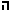
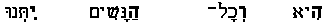
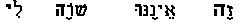

|
IN THE BOOK OF ESTHER.
Jehovah had declared (Deut. 31:16-18) (*2), that if His People forsook Him, He would hide His face from them. Though the book reveals Him as overruling all, His Name is hidden. It is there for His People to see, not for His enemies to see or hear. Satan was at work, using Haman to blot out the Nation, as once before he had used Pharaoh for the same purpose (see Ap. 23 and 25). Jehovah's counsel must stand. His promise of Messiah, the coming "Seed" of the woman (Gen. 3:15), must not fail. Therefore He must overrule all for the preservation of His People, and of the line by which that "Seed" was to come into the world. His working was secret and hidden : hence, the name of "JEHOVAH" is hidden secretly four times in this book, and the name "EHYEH" (I am that I am) once. The Massorah (Ap. 30) has a rubric calling attention to the former fact; and (at least) (*3) three ancient manuscripts are known in which the Acrostic (*4) letters in all five cases are written Majuscular (or, larger than the others) so that they stand out boldly and prominently, showing the four consonant letters of the mane JeHoVaH. In the Hebrew ,  , , , or, as written in Hebrew from right to left, , , , . In English, L, O, R, D. Also the four letters of the fifth Acrostic, "EHYH".The following phenomena are noticed in examining the four Acrostics which form the name "Jehovah" :
Thus in the two cases where the name is spelt backward (*5), Jehovah is seen overruling the counsels of Gentiles for the accomplishment of His own; and where the name is spelt forward (*5), He is ruling directly in the interests of His own People unknown to themselves. is formed by the initial letters, for the even was initial; and the name is spelt backward because Jehovah was turning back and overruling the counsels of man. The whole clause reads as follows; the words forming the Acrostic being put in italic type :-- "And when the king's decree which he shall make, shall be published throughout all his empire, (for it is great,) all the wives shall give to their husbands honor, both to great and small." The four words we give, 1st, in the Hebrew type (with the Majuscular letters at the beginning of each word); 2nd, with the Transliteration; and 3rd, in English paraphrase, reproducing the sentence in the word LORD with the initial letters backward :--

1 2 3 4
1 2 3 4
"Due Respect Our Ladies
is formed, as before, by the initial letters, for Jehovah is initiating His action; but the name is spelt forward because He is ruling and causing Esther to act; and take the first step, which was to lead up to so great an end. The four words are :
1 2 3 4
1 2 3 4
"Let Our Royal Dinner
The name of Jehovah is read in the invitation, intimating that there would be a fourth at that banquet." is the beginning of the end; for Haman had gone forth from that banquet "joyful and with a glad heart" (5:9) "that day." Yet it was to be his last. Hence the third Acrostic is formed with the final letters, for the end was approaching; and the name is spelt backward, for Jehovah was overruling Haman's gladness, and turning back Haman's counsel. The four words are : 
1 2 3 4
1 3 2 4
The English may be freely rendered "Yet am I
is formed, like the third, by the final letters, for Haman's end had come. But it is spelt forward like the first, for Jehovah was ruling and bringing about the end He had determined. Haman saw there was cause for fear. A fourth is there -- Jehovah Himself! And when Esther pleads for her life (7:3), the king asks "Who is he and where is he?" which brings in Jehovah's own ineffable name -- the Acrostic of the five final letters spelling in Hebrew "I am" (see the fifth Acrostic below). Esther replies : "The adversary and enemy is this wicked Haman." The king, filled with wrath, rises, and goes forth into the palace garden. Haman, filled with fear, rises, "to make request for his life to Esther the queen, for he saw
by the king." This was the climax, the end had come. Hence the name is spelt
by the final letters :
1 2 3 4
1 4 2 3
against him by the king." in this book does not form the name "Jehovah," but the remarkable name E H Y H which means "I AM." It is noted in some manuscripts by Majuscular letters, which have Massoretic authority (see Ap. 30). The Acrostic is formed by the final letters, and the name is spelt backward. The king asks "Who is he, and where is he, that durst presume in his heart to do so?" : i.e. to sell for destruction Queen Esther and her People. In saying this he unconsciously gives the name of Him who came down to deliver His People out of the hand of Pharaoh, and had then come down to deliver them again out of the hand of Haman, "the Jews' enemy", who, like Pharaoh, sought to destroy the whole nation (cp. Exodus 2:23-25 with 3:14, 15). The great enemy of the Messiah -- the living Word -- was seeking to destroy all hope of His promised coming (Gen. 3:15), and make void the repeated promise of Jehovah. Ahasuerus only pointed to human agency, but his words point us to the Satanic agency which was behind it. The Acrostic is in the final letters of his question "Who is he, and where is he?" Only the great "I am that I am" could know that, and could answer that question. Esther and Mordecai knew the human instrument, but none could know who was directing him but the One Who sees the end from the beginning. The words forming the Acrostic are
1 2 3 4
1 2 3 4
We may English it thus:
presume in his heart to do this thing?"
Thus was the name of the great "I AM" of Exodus 3:14 presented to the eye, to reveal the fact that He who said of E H Y H "this is My Name for ever, and this is My Memorial unto all generations" (v. 15), was there to remember His People. Here was a "generation" in Persia who experienced the truth and the power of this Name, as a former "generation" had done in Egypt. The same "I AM" had indeed come down to deliver them from Haman; as He had from Pharaoh, and from the great "enmity" (of Gen. 3:15) which instigated both to accomplish the Satanic design of exterminating the Nation of Israel. In these five Acrostics we have something far beyond a mere coincidence;
we have design. When we read the denunciation in Deut. 31:16-18,
and see it carried out in Persia, we learn that though God was not among His people there, He was for them. Though He was not acting
as Jehovah, "that dwelleth between the Cherubim," He was "the God of Heaven,
ruling and over-ruling all in the Heaven above and in the Earth beneath"
for the fulfillment of His purposes, and in the deliverance of His People.
Hence, though His name, as well as His presence, is HIDDEN, yet,
it is there, in the Word; and so wonderfully interwoven that no enemy will
ever know how to put it out.
(*1) In the note on Est. 1:1 this Ahasuerus is identified with Astyages, who is the same as Darius the Mede. See notes on p. 618, and Ap. 57. (*2) The Talmud (Kelim 139) says "Where do we get Esther in the Law?" And the answer is "Deut. 31:18, 'and I will surely hide my face'". So here, the outward form of the revelation takes on the form of its inward and spiritual meaning. For the same reason we have the Divine Title "the God of heaven" as characterizing the book Exra-Nehemiah. See note on 2Chron. 36:23. (*3) How many more there may be will be ascertained only when all the special scrolls of Esther shall be examined. (*4) Fo 116 r other examples of Acrostics in the Hebrew text, see Ap. 63. vii. (*5) In the use of these terms, "backward" and "forward" the English
reader must bear in mind that Hebrew is read from right to left both in
the spelling and wording.
|